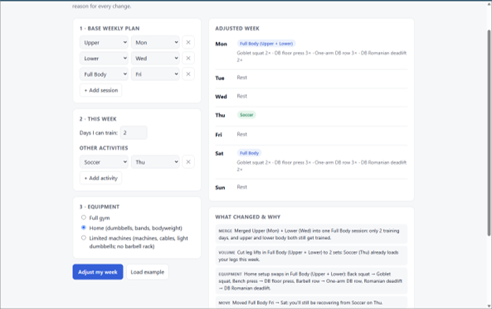

Product Showcase (Prototype / Live App / 2-Min Video)
Current Status: Build 1: local prototype (prototype/index.html, fixed rules, no AI calls)
Demo: Local prototype with the example week: Upper / Lower / Full Body plan, only 2 training days, soccer Thursday, home equipment.

Live cloud app URL and two-minute video coming in Build 5.
Living PRD (Product Requirements Document)
Updated every week as we test with real users and learn what works.
1. Target User & The Job to Be Done
PRD v1 · November 9, 2026
The problem: My training plan assumes a perfect week. Real weeks have fewer gym days, soccer practice, or a gym without the right equipment, and I re-plan in my head every time.
Who is this for? Me and MBA friends who lift on a weekly plan and play other sports.
The painful "Before" workflow: Skip sessions or improvise substitutions on the spot; the week's balance falls apart.
The "After" workflow with this product: Tell it this week's constraints and get an adjusted week that keeps the balance (muscle groups, volume) and respects other activities and equipment.
2. Scope & Explicit Non-Goals
- In Scope (Core Workflow): Set base plan once → enter this week's constraints (days available, other activities, gym/equipment) → get the adjusted week with a reason for each change.
- Out of Scope #1: Nutrition.
- Out of Scope #2: Live Whoop sync (not in Build 1; recovery data comes later).
- Out of Scope #3: Injury or medical advice.
How I'll know it works: Testers use it at least once a week and follow most of the adjusted plan.
3. How It Works Under the Hood & Riskiest Assumption (Week 2+)
Riskiest Assumption: [To decide in Build 2]
Simple Architecture (Build 1): [Base plan + this week's constraints] → [Single web page, runs locally] → [Fixed rules in prototype/coach.js: merge sessions to fit days, move sessions away from sports, trim volume, swap exercises for equipment; no AI model yet] → [Adjusted week + one-line reason per change]
4. Unit Economics & Analytics Snapshot (Updated Weekly)
Cumulative Build Spend
[Record actual spend]
Est. Cost Per User Run
[Not yet estimated]
User Evidence (Analytics from Build 2)
[Not yet measured]
Sponsor Call (Week 6)
TBD
Weekly Build Log
Build on at least two separate days each week outside class, including the November 3 break. Push commits and log actual progress, failures, PRD changes, costs, and hours here. All build deadlines are noon, New York time.
November 8, 2026
- Set up Git, GitHub, Node.js, Claude Code and Codex.
Build 1 · Intent.md & Throwaway Prototype (Due Nov 9)
- What shipped: PRD v1 on this page, plus a throwaway local prototype (
prototype/index.html). You enter a base plan, days available, other activities and equipment, and it outputs an adjusted Mon–Sun week with a one-line reason per change. It uses fixed rules: merge sessions to fit fewer days, keep leg work off sport days and the day before or after them, cut leg sets when a sport already loads the legs, and swap exercises for home or limited-machine setups. No AI calls or API keys; 11 deterministic tests in tests/coach.test.js. Screenshot above.
- What works: The example week (2 days, soccer Thursday, home) comes out right. Upper + Lower merge into one Full Body, the Friday session moves to Saturday so it isn't the day after soccer, leg sets drop to 2, and barbell lifts swap to dumbbell versions. Each change has a one-line reason.
- Things learned with AI: Asking the agent to explain its plan before building caught a problem early: my PRD hadn't actually pasted, so it asked instead of inventing one. Keeping the rules in a separate file with tests made it easy to check that the reasons match what the plan actually does. Fixed rules were enough to test the core idea without an AI model.
- What broke / changed in PRD: Wrote PRD v1. Renaming the class repo failed because it needs org admin rights. The rules are crude: each sport counts as loading either the legs or the upper body, whatever its intensity; the exercise lists are fixed; the plan isn't saved between visits; and it doesn't plan across the Sunday → Monday week boundary. Next: test it on real weeks with friends.
- Cost & time this week: $0.00 · X hours
Build 2 · Smallest Local Version & PostHog (Due Nov 16)
- What shipped: [Local working slice, PostHog verified on this page and the local app, PRD v2, and local setup in AGENTS.md]
- What broke / changed in PRD: [Fill in]
- Cost & time this week: $[0.00] · [0] hours
Build 3 · Build.exe: The Core Workflow (Due Nov 23)
- What shipped: [End-to-end workflow working with real inputs + PostHog funnel events]
- What broke / changed in PRD: [Fill in]
- Cost & time this week: $[0.00] · [0] hours
Build 4 · Test.py: Choose Track A or Track B (Due Nov 30)
- Chosen track: [A: 10-case domain eval and one outside target-user review; OR B: 3–5 outside users and replay findings]
- Results and improvements: [Before/after evidence; for Track B, fixes to the top three friction points]
- PRD v4 changes: [What the evidence changed]
- Cost & time this week: $[0.00] · [0] hours
Build 5 · Ship.installer: Launch Ops, Rollback Check & 2-Min Video (Due Dec 7)
- Launch Ops & Safety: [Verified no exposed keys, set spend cap, tested 2-minute rollback]
- 2-Minute Video & Final Polish: [Link/embed above]
- Cost & time this week: $[0.00] · [0] hours